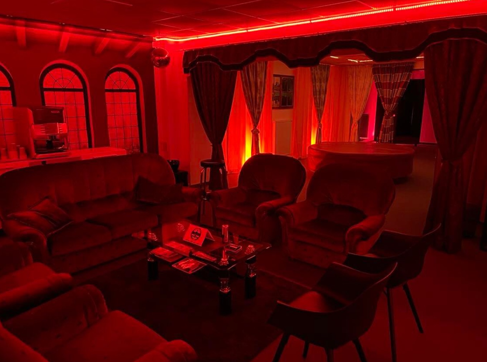

Filmproduzent · Studio Wien
RudolfKilian
Seit vielen Jahren steht Rudi hinter der Kamera von VideoRudi – im eigenen Filmstudio in Wien, mit moderner Technik und absoluter Diskretion. Er produziert authentische Filme und dreht für Content Creator, die professionelles Material wollen. Mit erotik-homepage.com bekommen sie gleich die passende Website dazu.
Das Studio

Meet & Greetjeden Dienstag
18:00 – 21:00Uhr, im Studio
Schau vorbei, lern das Studio kennen und stell Rudi deine Fragen persönlich. Diskret, entspannt, auf Augenhöhe.
Johnstraße 83 / Top 11150 Wien Route planenTriff mich auf der Venus Berlin22.–25. Oktober · Messe Berlin